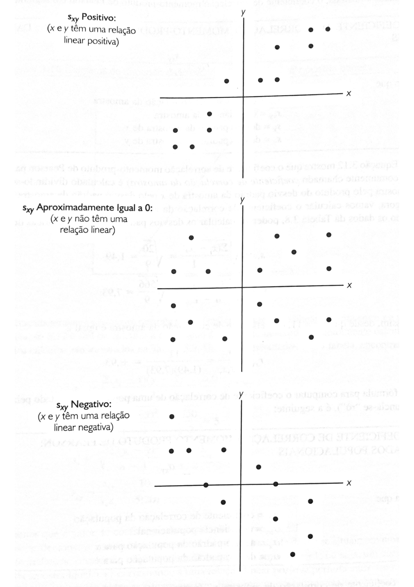

7 Medidas de associação entre duas variáveis
7.1 Covariância
\[ \frac{S_{xy}=(x_{i} - \bar{x} )(y_{i} - \bar{y} )}{n - 1} \] \[\frac{ \sigma_{xy}=\sum (x_{i} - \bar{x} )(y_{i} - \bar{y} )} {N}\]
A covariância entre duas variáveis (X, Y) é uma medida de variabilidade conjunta dessas duas variáveis aleatórias, ou seja, a correlação linear entre duas variáveis, sendo X a variável independente (ou explanatória) e Y a variável dependente (ou resposta). - Quando a covariâncias entre essas variáveis é positiva os dados apresentam tendência positiva na dispersão. - Quando o valor da covariância é negativo, o comportamento é análogo, no entanto, os dados apresentam tendências negativas.
A covariância é uma medida de como as alterações em uma variável estão associadas a mudanças em uma segunda variável. Especificamente, a covariância mede o grau em que duas variáveis estão linearmente associadas. No entanto, também é frequentemente usado informalmente como uma medida geral de como duas variáveis são monotonicamente relacionadas.

7.2 Coeficiente de correlação
Também chamado de correlação momento-produto de Pearson
Para amostra:\[\small r_{xy} =\frac{S_{xy}} {S_{x}S_{y}}\] \(\small r_{xy}=\textrm{ coeficiente de correlação da amostra}\) \(\small S_{xy}= \textrm{covariância da amostra}\) \(\small S_x = \textrm{desvio padrão da amostra de x}\) \(\small S_y = \textrm{desvio padrão da amostra de y}\)
Para população:
\[ \small \rho_{xy} = \frac{\sigma_{xy}} {\sigma_{x} \sigma_{y}}\]
\(\small \rho_{xy}= \textrm{coeficiente de correlação da população}\) \(\small \sigma_{xy}= \textrm{covariância da população}\) \(\small \sigma_x = \textrm{desvio padrão da população para x}\) \(\small \sigma_y = \textrm{desvio padrão da população para y}\)
A correlação é uma versão em escala de covariância que assume valores em [−1,1] com uma correlação de ± 1 indicando associação linear perfeita e 0 indicando nenhuma relação linear. - Diferença - Esse escalonamento torna a correlação invariante às mudanças na escala das variáveis originais
A constante de escala é o produto dos desvios padrão das duas variáveis.
Portanto, o Coeficiente de Correlação p mede o grau de correlação entre duas variáveis, a qualidade da relação entre as variáveis. - p entre 90% e 100%: alta ou ótima correlação - p entre 80% e 90%: boa correlação - p entre 60% e 80%: média correlação - p entre 40% e 60% baixa correlação - p entre 0 40%: péssima correlação
Para p = 1, tem-se uma correlação perfeita entre as duas variáveis. Isso significa que y aumenta com x
Para p = 0, as duas variáveis não dependem linearmente uma da outra, não há associação entre as duas variáveis (x e y)
Para p = - 1, há uma correlação perfeita entre as variáveis, no entanto, essa correlação é negativa. Isso significa que toda vez que x aumenta, y diminui
7.2.1 R
Exemplo: Analisar a covariância e correlação entre as variáveis milhas/galão e peso do veículo no dataset mtcars.
## mpg cyl disp hp drat wt qsec vs am gear carb
## Mazda RX4 21.0 6 160.0 110 3.90 2.620 16.46 0 1 4 4
## Mazda RX4 Wag 21.0 6 160.0 110 3.90 2.875 17.02 0 1 4 4
## Datsun 710 22.8 4 108.0 93 3.85 2.320 18.61 1 1 4 1
## Hornet 4 Drive 21.4 6 258.0 110 3.08 3.215 19.44 1 0 3 1
## Hornet Sportabout 18.7 8 360.0 175 3.15 3.440 17.02 0 0 3 2
## Valiant 18.1 6 225.0 105 2.76 3.460 20.22 1 0 3 1
## Duster 360 14.3 8 360.0 245 3.21 3.570 15.84 0 0 3 4
## Merc 240D 24.4 4 146.7 62 3.69 3.190 20.00 1 0 4 2
## Merc 230 22.8 4 140.8 95 3.92 3.150 22.90 1 0 4 2
## Merc 280 19.2 6 167.6 123 3.92 3.440 18.30 1 0 4 4
## Merc 280C 17.8 6 167.6 123 3.92 3.440 18.90 1 0 4 4
## Merc 450SE 16.4 8 275.8 180 3.07 4.070 17.40 0 0 3 3
## Merc 450SL 17.3 8 275.8 180 3.07 3.730 17.60 0 0 3 3
## Merc 450SLC 15.2 8 275.8 180 3.07 3.780 18.00 0 0 3 3
## Cadillac Fleetwood 10.4 8 472.0 205 2.93 5.250 17.98 0 0 3 4
## Lincoln Continental 10.4 8 460.0 215 3.00 5.424 17.82 0 0 3 4
## Chrysler Imperial 14.7 8 440.0 230 3.23 5.345 17.42 0 0 3 4
## Fiat 128 32.4 4 78.7 66 4.08 2.200 19.47 1 1 4 1
## Honda Civic 30.4 4 75.7 52 4.93 1.615 18.52 1 1 4 2
## Toyota Corolla 33.9 4 71.1 65 4.22 1.835 19.90 1 1 4 1
## Toyota Corona 21.5 4 120.1 97 3.70 2.465 20.01 1 0 3 1
## Dodge Challenger 15.5 8 318.0 150 2.76 3.520 16.87 0 0 3 2
## AMC Javelin 15.2 8 304.0 150 3.15 3.435 17.30 0 0 3 2
## Camaro Z28 13.3 8 350.0 245 3.73 3.840 15.41 0 0 3 4
## Pontiac Firebird 19.2 8 400.0 175 3.08 3.845 17.05 0 0 3 2
## Fiat X1-9 27.3 4 79.0 66 4.08 1.935 18.90 1 1 4 1
## Porsche 914-2 26.0 4 120.3 91 4.43 2.140 16.70 0 1 5 2
## Lotus Europa 30.4 4 95.1 113 3.77 1.513 16.90 1 1 5 2
## Ford Pantera L 15.8 8 351.0 264 4.22 3.170 14.50 0 1 5 4
## Ferrari Dino 19.7 6 145.0 175 3.62 2.770 15.50 0 1 5 6
## Maserati Bora 15.0 8 301.0 335 3.54 3.570 14.60 0 1 5 8
## Volvo 142E 21.4 4 121.0 109 4.11 2.780 18.60 1 1 4 2library("ggpubr")
ggscatter(my_data, x = "mpg", y = "wt",
add = "reg.line", conf.int = TRUE,
cor.coef = TRUE, cor.method = "pearson",
xlab = "Autonomia", ylab = "Peso do Veículo")## `geom_smooth()` using formula 'y ~ x'## [1] -5.116685## [1] -0.8676594